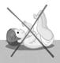
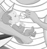

RÉSUMÉ DES CARACTÉRISTIQUES DU PRODUIT
ANSM - Mis à jour le : 06/08/2014
UVESTEROL VITAMINE A.D.E.C., solution buvable
2. COMPOSITION QUALITATIVE ET QUANTITATIVE
Concentrat de vitamine A synthétique (forme huileuse) .................................................................... 100 000 UI
(Quantité correspondante à .......................................................................................................... 58,823 mg)
Ergocalciférol (vitamine D2) ............................................................................................................. 33 333 UI
(Quantité correspondante à ........................................................................................................... 0,833 mg)
Acétate d'alpha-tocophérol (vitamine E) .............................................................................................. 0,167 g
Acide ascorbique (vitamine C) ........................................................................................................... 1,667 g
Pour un flacon de 10 ml
1 dose de 0, 3 mL= 3000 UI de vitamine A, 1000 UI de vitamine D, 5 mg de vitamine E et 50 mg de vitamine C.
Pour la liste complète des excipients, voir rubrique 6.1.
Solution buvable.
Solution incolore à jaunâtre, limpide à légèrement opalescente avec une odeur de fruits rouges.
4.1. Indications thérapeutiques
UVESTEROL VITAMINE ADEC est indiqué chez le nouveau-né (en particulier le nouveau-né prématuré) et le nourrisson présentant un risque de déficit ou de malabsorption en vitamines liposolubles A, D et E et vitamine C.
4.2. Posologie et mode d'administration
Posologie
La posologie usuelle est de 1 dose (0, 3 mL) par jour.
Mode d'administration
Afin de limiter le risque de fausse route lors de l'administration du produit, il est particulièrement important de suivre scrupuleusement le mode d'administration du produit:
La solution étant aqueuse, elle peut être administrée dans un biberon de faible volume avant la tétée.
Mode d’administration chez le nouveau-né prématuré qui tète (jusqu’au terme d’environ 37 semaines) :
· Toujours administrer le produit avant la tétée ou le biberon.
· Utiliser exclusivement la pipette doseuse pour administration orale fournie dans la boîte :
(SERINGOUTTE)
· Prélever à l’aide de la pipette (SERINGOUTTE) jusqu’au trait rouge correspondant à une dose.
· Diluer cette dose dans un petit volume de lait (environ 2 mL) dans une tétine adaptée à l’enfant. Si l’enfant est allaité au sein, la dilution peut se faire soit dans le lait de la maman, soit dans de l’eau :
· Prendre l’enfant éveillé, l’installer en position semi-assise au creux du bras, la tête reposée sur le bras :
· Laisser l’enfant téter doucement la tétine, lui retirer la tétine une fois vide, puis lui donner le sein ou le biberon.
· Ne pas allonger l’enfant immédiatement après l’administration.
· Rincer la pipette (SERINGOUTTE) et la tétine à l’eau après chaque utilisation.
Mode d’administration chez le nouveau-né à terme et le nourrisson :
· Toujours administrer le produit avant la tétée ou le biberon.
· Utiliser exclusivement la pipette pour administration orale fournie dans la boîte :
(SERINGOUTTE)
· Prélever à l’aide de la pipette (SERINGOUTTE) jusqu’au trait rouge correspondant à une dose..
· Prendre l’enfant éveillé, l’installer en position semi-assise au creux du bras, la tête reposée sur le bras :

· Introduire la pipette à environ 1 cm dans la bouche et la placer contre l’intérieur de la joue :
Laisser téter l’enfant, puis lui donner le sein ou le biberon. Si l’enfant ne tète pas, appuyer très lentement sur le piston de la pipette afin que le produit s’écoule goutte à goutte dans la bouche, puis lui donner le sein ou le biberon.
· Ne pas allonger l’enfant immédiatement après l’administration.
· Rincer la pipette (SERINGOUTTE) à l’eau après chaque utilisation.
En cas de reflux gastro-oesophagien, de problèmes digestifs ou de troubles de la déglutition :
Ne pas administrer pur, mais dans une tétine adaptée à l’enfant après dilution dans un petit volume d'eau ou de lait (environ 2 mL).

Laisser l’enfant téter doucement la tétine, et lui retirer la tétine une fois vide, puis lui donner le sein ou le biberon. Rincer la tétine à l’eau après chaque utilisation.
· Hypersensibilité aux substances actives ou à l’un des excipients mentionnés à la rubrique 6.1
· Hypercalcémie
· Hypercalciurie
· Lithiase calcique
4.4. Mises en garde spéciales et précautions d'emploi
Des cas de fausse route ou de malaise avec apnée pouvant entraîner une cyanose ont été rapportés chez des nouveau-nés et des nourrissons, sans pathologie connue, lors de l'administration de l'UVESTEROL vitaminé ADEC, et ce, notamment au cours du premier mois de vie (voir rubrique 4.8).
Par conséquent, afin de limiter ce risque, l'administration de l'Uvestérol vitaminé ADEC doit s'effectuer en respectant scrupuleusement le protocole d'administration du produit détaillé en rubrique 4.2.
En cas de reflux gastro-oesophagien, de problèmes digestifs ou de troubles de la déglutition, ne pas administrer pur, mais dans une tétine adaptée à l’enfant après dilution dans 2ml d'eau ou de lait selon le mode d'allaitement préconisé (voir rubrique 4.2).
Les vitamines A et D sont présentes dans de nombreux médicaments. La vitamine D est également présente dans de nombreux laits pour nouveau-nés et nourrissons.
Pour éviter tout surdosage, susceptible d'entraîner des effets indésirables graves, tenir compte des doses totales de vitamine D et de vitamine A en cas d'association avec un traitement contenant déjà ces vitamines ou en cas d'utilisation de lait supplémenté en vitamine D.
En raison d’un effet légèrement stimulant de la vitamine C, il est préférable de ne pas prendre ce médicament en fin de journée.
En cas d’apport en calcium, un contrôle régulier de la calciurie est indispensable.
4.5. Interactions avec d'autres médicaments et autres formes d'interactions
Sans objet.
Sans objet.
4.7. Effets sur l'aptitude à conduire des véhicules et à utiliser des machines
Sans objet.
Déclaration des effets indésirables suspectés
La déclaration des effets indésirables suspectés après autorisation du médicament est importante. Elle permet une surveillance continue du rapport bénéfice/risque du médicament. Les professionnels de santé doivent déclarer tout effet indésirable suspecté via le système national de déclaration : Agence nationale de sécurité du médicament et des produits de santé (Ansm) et réseau des Centres Régionaux de Pharmacovigilance. Site internet : www.ansm.sante.fr.
Signes résultant de l'administration de doses excessives de vitamine D :
Signes cliniques:
· céphalées, asthénie, anorexie, amaigrissement, arrêt de croissance,
· nausées, vomissements,
· polyurie, polydipsie, déshydratation,
· hypertension artérielle,
· lithiase calcique, calcifications tissulaires, en particulier rénales et vasculaires, insuffisance rénale.
Signes biologiques:
· hypercalcémie, hypercalciurie, hyperphosphatémie, hyperphosphaturie.
Signes résultant de l'administration de doses excessives de vitamine A:
Aigu (doses supérieures à 150 000 UI):
· Signes cliniques: troubles digestifs, céphalées, hypertension intracrânienne (se manifestant chez le nourrisson par le bombement de la fontanelle), œdème papillaire, troubles psychiatriques, irritabilité, voire convulsions, desquamation généralisée retardée.
Chronique (risque d'intoxication chronique lors d'un apport prolongé de vitamine A à des doses supraphysiologiques chez un sujet non carencé):
· signes cliniques: hypertension intracrânienne, hyperostose corticale des os longs et soudure précoce épiphysaire. Le diagnostic est généralement porté sur la constatation de gonflements sous-cutanés sensibles ou douloureux au niveau des extrémités des membres. Les radiographies objectivent un épaississement périosté diaphysaire au niveau du cubitus, du péroné, des clavicules et des côtes.
Conduite à tenir:
Cesser l'administration de ce médicament, réduire les apports calciques, augmenter la diurèse par des boissons abondantes.
5. PROPRIETES PHARMACOLOGIQUES
5.1. Propriétés pharmacodynamiques
Classe pharmacothérapeutique : associations de vitamines, code ATC : A11JA
La vitamine D est une vitamine liposoluble. Elle exerce un rôle essentiel sur l'intestin, dont elle augmente la capacité à absorber le calcium et les phosphates et elle favorise la minéralisation du squelette, grâce à ses actions directes sur l'os en formation et à ses actions indirectes impliquant l'intestin, les parathyroïdes et l'os déjà minéralisé.
La vitamine A est une vitamine liposoluble. Elle joue un rôle important dans la formation du pourpre rétinien (nécessaire à l'adaptation de la vision lorsque la lumière diminue), dans la multiplication cellulaire et la trophicité épithéliale et tissulaire.
La vitamine E est une vitamine liposoluble, agissant comme agent anti-oxydant et au niveau de la synthèse de l'hème, très répandue dans tous les aliments.
La vitamine C est une vitamine hydrosoluble, largement répandue dans le monde vivant, apportée essentiellement par les végétaux (fruits frais, crudités, salades, légumes verts et autres légumes frais), nécessaire à l'homme pour les réactions d'oxydo-réduction.
5.2. Propriétés pharmacocinétiques
Vitamine D :
La vitamine D est absorbée dans l'intestin grêle de façon passive, puis rejoint la circulation générale par voie lymphatique, incorporée aux chylomicrons.
Après absorption, elle se lie à une protéine porteuse spécifique et est transportée jusqu'au foie pour y être convertie en 25-hydroxyvitamine D. Cette dernière se lie à son tour à la même protéine porteuse et est transportée jusqu'aux reins ou elle est transformée en sa forme active, la 1,25-dihydroxyvitamine D.
Ses sites de stockage essentiels sont le tissu adipeux, les muscles, mais aussi le sang. La 25 hydroxyvitamine D liée à sa protéine porteuse est la forme majeure de réserve circulante de la vitamine D. Sa demi-vie dans le sang est de 15 à 40 jours.
L'élimination de la vitamine D et de ses métabolites se fait par voie fécale, sous forme non transformée ou sous forme hydrosoluble (acide calcitroïque, dérivés glycuroconjugués).
Vitamine A :
L'absorption digestive au niveau de l'intestin est liée à celle des graisses.
Le stockage hépatique est important (à 90 %) et se fait sous forme de rétinyl-esters principalement.
La vitamine A est liée au RBPP (rétinol binding plasmatic protein) formée par le foie.
L'élimination se fait par voie fécale et urinaire sous forme de dérivés.
Vitamine C
La résorption digestive est correcte avec absence d'accumulation. En cas d'apports supérieurs aux besoins, l'excès est éliminé par voie urinaire.
Vitamine E
Son absorption se fait au niveau de l'intestin grêle sous forme de micelles mixtes, selon un processus de diffusion. La principale forme circulante est l'α-tocophérol lié aux HDL et LDL.
Elle est stockée au niveau du tissu adipeux, du foie et des muscles.
L'élimination se fait sous forme conjuguée dans la bile.
5.3. Données de sécurité préclinique
Sans objet.
Gallate de propyle, arôme fruits rouges (substances aromatisantes naturelles, préparations aromatisantes, propylèneglycol, eau), édétate disodique, acide citrique anhydre, phosphate trisodique, sorbate de potassium, saccharine sodique, polysorbate 80, hydroxyde de sodium, eau purifiée.
Sans objet.
1 an.
6.4. Précautions particulières de conservation
A conserver à une température ne dépassant pas 25°C et à l'abri de la lumière.
6.5. Nature et contenu de l'emballage extérieur
Pipette doseuse pour administration orale composée d'un piston gradué « 1 dose » (en polystyrène) et d'une pipette ou corps (en polyéthylène basse densité).
6.6. Précautions particulières d’élimination et de manipulation
Pas d'exigences particulières.
7. TITULAIRE DE L’AUTORISATION DE MISE SUR LE MARCHE
Laboratoires CRINEX
3, rue de Gentilly
BP 337
92541 Montrouge Cedex
8. NUMERO(S) D’AUTORISATION DE MISE SUR LE MARCHE
9. DATE DE PREMIERE AUTORISATION/DE RENOUVELLEMENT DE L’AUTORISATION
[à compléter ultérieurement par le titulaire]
10. DATE DE MISE A JOUR DU TEXTE
[à compléter ultérieurement par le titulaire]
Sans objet.
12. INSTRUCTIONS POUR LA PREPARATION DES RADIOPHARMACEUTIQUES
Sans objet.
Médicament non soumis à prescription médicale.